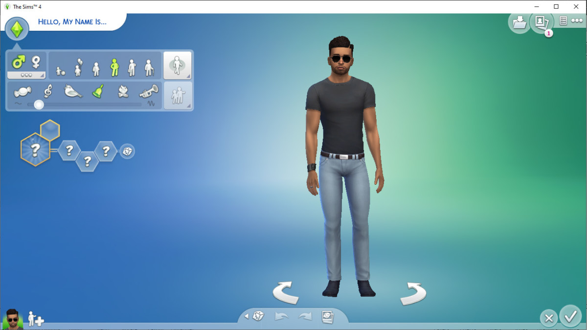
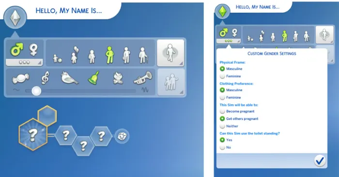
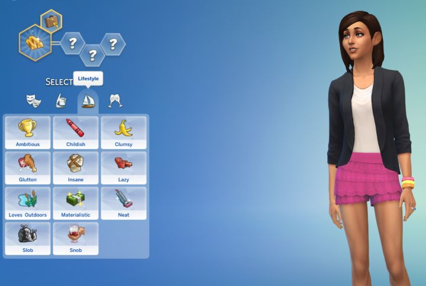

Navegación


Modo Crear
El Modo Crear un Sim (también llamado CAS por sus siglas en inglés, Create A Sim) es el lugar donde se diseñan las unidades domésticas. Se utiliza para personalizar su apariencia y personalidad, así como las conexiones familiares antes de añadirlos a la partida. Una vez colocados en el juego, sólo podrán hacerse cambios superficiales en la apariencia del Sim si se quisiera editar.
|
Tráiler oficial del canal de LosSimsEA España, muestra la mayoría de funciones y opciones que hay en este modo. |
Explicación de la interfaz y el uso de mods en el juego (cortesía del canal de Youtube DeidaSims). |
|---|
Punto de inicio
Al entrar la interfaz se verá así, tenemos diferentes opciones para personalizar.
|  |
Empezaremos con los datos básicos. ─ Lo primero que nos deja editar es el nombre y apellido(s). Estos se pueden randomizar. ─ Podemos escoger el género y sexualidad del Sim e incluso personalizarlos al gusto. ─ Una elección muy importante es la etapa, determinará la edad inicial de nuestro Sim (infantes, niños, adolescentes, jóvenes adultos, adultos o ancianos). ─ También es posible cambiar la forma de andar, la voz y el vínculo inicial con otros Sims de la misma unidad doméstica. |
|---|
Aspiraciones y rasgos
|  |
─ Las aspiraciones son objetivos que tienen tus Sims durante su vida. En la infancia tendrán una aspiración especial que solo tienen los niños, pero cuando lleguen a adolescentes podrán escoger una nueva aspiración que durará toda la vida. Se puede cambiar entre aspiraciones en medio de la partida sin perder el progreso. ─ Las aspiraciones otorgan un pequeño rasgo extra que les ayudará a que sus objetivos sean más fáciles de cumplir. A pesar de eso son algo tediosos de cumplir. ─ Los rasgos son características que tienen los Sims, estos determinan su comportamiento, gustos y emociones. Hay 4 categorías: Emocional, Afición, Estilo de vida y Social. Los Sims pueden tener hasta 3 rasgos y algunos de ellos son incompatibles entre ellos (por ejemplo, fiel es incompatible con anti-compromiso). Los rasgos de infante y niño desaparecen al cercer a Adolescente. Los rasgos que escojas se quedarán para toda la vida Sim. |
|---|